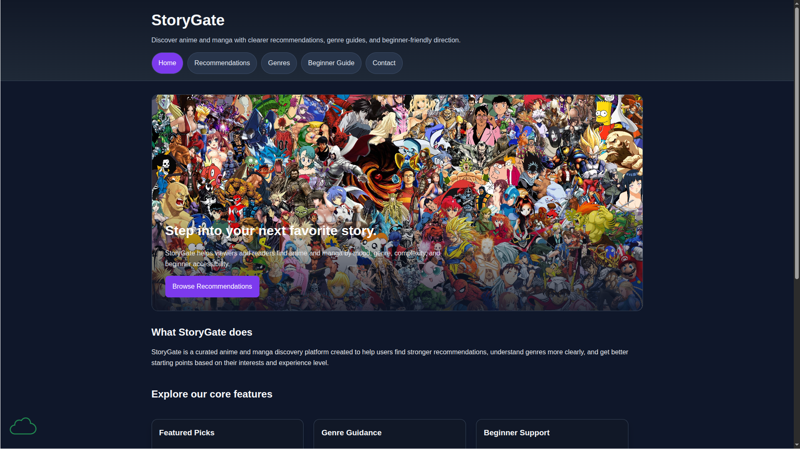

Peer Review 1
Yohannes, Wangel
Site Preview

Evaluation
- Website Checklist Review
- The site uses semantic structure throughout: header, main, section, article, and footer are all used appropriately.
- Navigation is consistent across all five pages and clearly communicates the site’s structure.
- Text contrast is readable, and the visual hierarchy is strong thanks to consistent heading sizes and spacing.
- Images include alt text and are sized appropriately for their layouts.
- Links are descriptive and easy to understand, improving usability.
- Each page has a meaningful title and clear purpose.
- The layout is responsive and maintains readability across different screen sizes.
- Client Project – Part 2 Requirements
- Five fully functional pages: Wayne’s project includes Home, Recommendations, Genres, Beginner Guide, and Contact — all with real content.
- Home page structure: The index page uses header, main, footer, and a hero section with a working slideshow. Content is substantial and well‑organized.
- Navigation bar: Present on all pages, consistent in placement, and all links work correctly.
- Four additional pages: Each page contains original writing, structured sections, and relevant images or interactive elements.
- Content relevance: All pages support the theme of StoryGate — an anime/manga discovery platform — and feel cohesive.
- Separate files: CSS and JS are correctly separated into external files, meeting the assignment requirement.
- Additional Observations & Suggestions
- The writing across the site is clear, consistent, and genuinely helpful for beginners — great job shaping the tone.
- The hero slideshow on the homepage adds motion and personality without being distracting.
- The card‑based layouts on Recommendations and Beginner Guide are easy to scan and visually balanced.
- Consider adding a small visual divider or spacing between major sections to enhance readability even more.
- The footer is consistent, but adding quick links or a small logo could strengthen branding.
- Wayne, your content choices are thoughtful — adding a few icons or subtle color accents could make the pages feel even more polished.
- Stop / Start / Continue
- Stop: Avoid using very similar alt text across multiple images — unique descriptions help accessibility.
- Start: Start experimenting with small visual enhancements (icons, subtle backgrounds, or section separators) to elevate the aesthetic.
- Continue: Continue using strong structure and clear writing — it makes the site feel professional and user‑friendly.
Review completed by: Amir Janid Homsi
Date: April 14, 2026